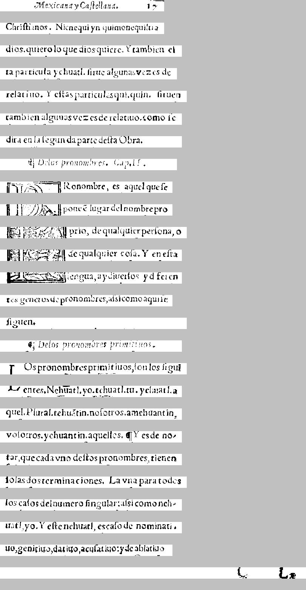

    ||e creatur v Caftellana,   ta 
        Mexicana y Ca|tellana.          17

 Chri|tianos. Nicnequi yn quimonequiltia 
Chri|tianos. Nicnequi yn quimonequiltia

 dios, quiero lo que dios quiere. Y tambien e|- 
dios. quiero lo que dios quiere. Y tambien e|

 ta particula yehuatl, |in te alguna vez es de 
ta particula yehuatl. |irue algunas vezes de

 relatino. Y e|tas particulas qui-quin: |irueta 
relatiuo. Y e|tas particulas qui. quin. |iruen

 tambien algunas vez es de relatiuo, como |e 
tambien algunas vezes de relatiuo. como |e 

 dira en la |egunda parte de|ta Obra.   
dira en la |egunda parte de|ta Obra.

    tl D.-   
    ¶Delos pronombres. Cap. 11.

 8 -¡7. 21."""li leo nombre, es aquel que |e 
Pronombre, es aquel que |e

 I ITI Tzioac. II poner lugar del nombre pro 
pone \~e lugar del nombre pro

 libri poterat? VII Prio, de qualquier per|ona, o 
prio, de qualquier co|a. Y en e|ta

 IITI ET Carte|ii de qualquier co|a. Y en e|ta 
lengua, ay diuer|os y diferen

 JCAMagne|ia, ni engua, ay diuer|os y diferen-
tes generos de pronombres, a|si como aqui |e

 tes generos de pro nombres, a|i: i como aqui |e 
|iguen.

 |iguen.             
    ¶Delos pronombres primitiuos.

   4. De los provo-  
Los pronombres primitiuos, |on los |igui

 ]: Os pro nombres primitiuos, |on los figui 
entes. Nehuatl. yo. tehuatl. tu. yehuatl. a

  Frientes. Nehuatl . yn tehuatl . tu. yehuatl,4 
quel. Plural. tehu\~atin. no|otros. amehuantin,

 quel. Plutal, tehuatzin, no|otros, amehuantin, 
vo|otros. yehuantin. aquellos. ¶y es de no-

 vo|otros . yehuantin, aquellos. III Y es de no- 
tar, que cada vno de|tos pronombres, tienen

 tar, que cada vno de|tos pro nombres tienen 
|olas dos terminaciones. La vna para todos

 |olas dos terminaciones. La vna para todos 
los ca|os del numero |ingular: a|si como neh-

 los ca|os del numero |ingular; a|az como neh- 
uatl, yo. Y e|te nehuatl, esca|o de nominati-

  uatl yo. Y e|te nehuatl, es ca|o de nominari - 
uo, genitiuo, datiuo, acu|atiuo: y de ablatiuo-

 unigenitruo, dat tuo, acu|atino; y de ab latino 
                    C     La

                  l...   J...æ 


===============================================


    [latin ||e creatur ][nahuatl v ][spanish Caftellana,   ta 
 Chri|tianos. ][nahuatl Nicnequi yn quimonequiltia 
 ][spanish dios, quiero lo que dios quiere. Y tambien e|- 
 ta particula ][nahuatl yehuatl, ][spanish |in te alguna vez es de 
 relatino. Y e|tas particulas ][nahuatl qui-quin: ][spanish |irueta 
 tambien algunas vez es de relatiuo, como |e 
 dira en la |egunda parte de|ta Obra.   
][null     [nahuatl tl ][spanish D.-   
 8 -¡7. 21."""li leo nombre, es aquel que |e 
 ][nahuatl I ITI Tzioac. ][spanish II poner lugar del nombre ][latin pro 
 libri poterat? ][spanish VII Prio, de qualquier per|ona, o 
 ][latin IITI ET Carte|ii ][spanish de qualquier co|a. Y en e|ta 
 JCAMagne|ia, ni engua, ay diuer|os y diferen-
 tes generos de pro nombres, a|i: i como aqui |e 
][null  [spanish |iguen.             
   4. De los provo-  
 ][latin ]: Os pro ][spanish nombres primitiuos, |on los figui 
  Frientes. ][nahuatl Nehuatl . yn tehuatl . tu. yehuatl,4 
 ][spanish quel. Plutal, ][nahuatl tehuatzin, ][spanish no|otros, ][nahuatl amehuantin, 
 ][spanish vo|otros ][nahuatl . yehuantin, ][spanish aquellos. III Y es de no- 
 tar, que cada vno de|tos pro nombres tienen 
][null  [spanish |olas dos terminaciones. La vna para todos 
 los ca|os del numero |ingular; a|az como ][nahuatl neh- 
  uatl yo. ][spanish Y e|te ][nahuatl nehuatl, ][spanish es ca|o de ][latin nominari - 
 unigenitruo, dat ][spanish tuo, acu|atino; y de ][latin ab ][spanish latino 
                  l...   J...æ 


<table><tr><td>
<font face="courier"> 
</br></br></br></br></br>
</br></br>

    <font color="Red">||e creatur </font><font color="Blue">v </font><font color="Olive">Caftellana,   ta </br>
 Chri|tianos. </font><font color="Blue">Nicnequi yn quimonequiltia </br>
 </font><font color="Olive">dios, quiero lo que dios quiere. Y tambien e|- </br>
 ta particula </font><font color="Blue">yehuatl, </font><font color="Olive">|in te alguna vez es de </br>
 relatino. Y e|tas particulas </font><font color="Blue">qui-quin: </font><font color="Olive">|irueta </br>
 tambien algunas vez es de relatiuo, como |e </br>
 dira en la |egunda parte de|ta Obra.   </br>
</font><font color="Black">    <font color="Blue">tl </font><font color="Olive">D.-   </br>
 8 -¡7. 21."""li leo nombre, es aquel que |e </br>
 </font><font color="Blue">I ITI Tzioac. </font><font color="Olive">II poner lugar del nombre </font><font color="Red">pro </br>
 libri poterat? </font><font color="Olive">VII Prio, de qualquier per|ona, o </br>
 </font><font color="Red">IITI ET Carte|ii </font><font color="Olive">de qualquier co|a. Y en e|ta </br>
 JCAMagne|ia, ni engua, ay diuer|os y diferen-</br>
 tes generos de pro nombres, a|i: i como aqui |e </br>
</font><font color="Black"> <font color="Olive">|iguen.             </br>
   4. De los provo-  </br>
 </font><font color="Red">]: Os pro </font><font color="Olive">nombres primitiuos, |on los figui </br>
  Frientes. </font><font color="Blue">Nehuatl . yn tehuatl . tu. yehuatl,4 </br>
 </font><font color="Olive">quel. Plutal, </font><font color="Blue">tehuatzin, </font><font color="Olive">no|otros, </font><font color="Blue">amehuantin, </br>
 </font><font color="Olive">vo|otros </font><font color="Blue">. yehuantin, </font><font color="Olive">aquellos. III Y es de no- </br>
 tar, que cada vno de|tos pro nombres tienen </br>
</font><font color="Black"> <font color="Olive">|olas dos terminaciones. La vna para todos </br>
 los ca|os del numero |ingular; a|az como </font><font color="Blue">neh- </br>
  uatl yo. </font><font color="Olive">Y e|te </font><font color="Blue">nehuatl, </font><font color="Olive">es ca|o de </font><font color="Red">nominari - </br>
 unigenitruo, dat </font><font color="Olive">tuo, acu|atino; y de </font><font color="Red">ab </font><font color="Olive">latino </br>
                  l...   J...æ </br>
</font></font><br/><br/><br/>
<font color="Black">null</font></br>
<font color="Olive">spanish</font></br>
<font color="Red">latin</font></br>
<font color="Blue">nahuatl</font></br>
</td><td>
</td></tr></table>


CER: 0.252972972972973
CER, allow f->s: 0.2508108108108108
WER, keep punc: 0.6283783783783784
WER, keep punc, allow f->s: 0.6216216216216216
WER, remove punc: 0.5135135135135135
WER, remove punc, allow f->s: 0.5
